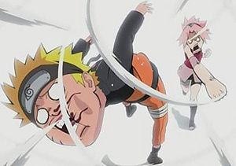

Shōnen
 De: La Frikipedia, la enciclopedia extremadamente seria.
De: La Frikipedia, la enciclopedia extremadamente seria.
| De la serie Géneros de anime y manga:
|
| Shōnen
|
|
|
| La animación de los Shonen es considerada la mejor de todas (y es verdad).
|
|
| Existe desde
|
que los japoneses conocieron la violencia
|
| Consta de
|
Niños, jóvenes o adultos entrándose a coñazo
|
| ¿Es apto para todo público?
|
Niños de 8 a 88 años
|
| ¿Depende directamente de otro género?
|
De hecho, los otros géneros dependen del shonen
|
| Ejemplo más conocido
|
Dragon Ball Z
|
| Calificación
|
Alta
|
| Notas
|
Los gringos se basan en el shonen para sus historias
|
El Shonen es, principalmente, manga para borricos. ejem... chicos en el que puedes ver un montón de tíos pegarse, intentar ligar con tías con la frente grande, buscar tesoros, buscar bolas mágicas con el sharingan o con el Byakugan dibujado (ejem estrellitas), tíos matar a criminales escribiendo su nombre en un cuaderno todo podrido e incluso ir matando a gente para limpiar las almas,haciendo de mayordomo demoniaco mientras espera el dia de absorver el alma de su amo resolviendo misterios muy dificiles .
Nadie sabe con exactitud porque cojones enganchan tanto las p**as batallas, pero la cuestión es que la Shonen Jump (si hijos mios, la primera palabra es Shonen) se hace millonaria con tantos dibujitos.
Origen
Yusuke y Kenshin pasando por lo mismo que Naruto
El shonen surgió hace muchos años, cuando las compañías que hacían manga decidieron que había que darle un giro de tuerca al asunto puesto que los mangas de la época hablaban de medio ambiente, romance y aventuras, lo que hacía que las ventas cayeran en los jóvenes entre 7 y 80 años. Así que decidieron realizar una encuesta entre ese target para ver que era lo que querían. Estos fueron los resultados:
- 80% quería ver peleas. De ese porcentaje:
- 40% quería peleas con sangre.
- 40% quería revistas con más papel.
- 20% quería algo de comedia.
- 15% quería ver chicas.
- 4% se conformaba con ver acción y algunos elementos ecchi.
- 1% quería ver muchos hombres juntos.
Las compañías decidieron ofrecer un género que reuniera peleas con mucha sangre y algo de comedia, algunas fanservice y minifalda, protagonizadas por hombres con quien pueden identificarse. Así nació el shonen. Luego fundarían una revista: Chonen Yomp, a las que le siguieron Chonen Magacin y Chonen Sondai. Al final, le agregaron algunos elementos provenientes de la escuela americana.
Influencia
El shonen es el estilo por excelencia del Latinoamérica es shonen. Ha servido de inspiración para las aburridas y poco interesantes tiras cómicas de Estados Unidos, de hecho el 99.99% de los dibujos animados americanos están basados directa o indirectamente en el shonen.
Además, en muchos casos es la puerta de entrada del Japón, de hecho, más del 80% de los turistas que llegan a ese país reconocen haberlo hecho inspirados en algún shonen histórico o simplemernte para ver si Kyoto o el outworld existen en realidad.
Leyes del shonen
- Ley del protagonista único: un prota que es retrasado mental y, al ver que no se vale por sí mismo, se encarga de encontrar a una pandilla de tipos que le hagan el trabajo sucio(y a alguna tipa para que le haga otra cosa :P)
- Ley del todopoderoso: por lo general tiene algún poder chungo o habilidades chungas que nadie entiende(lanzar cuchillitos, matar con solo escribir el nombre en una libreta, transformar la mierda en árboles...) pero siempre aparecerá alguien con la misma habilidad o similar, en ese caso el personaje en cuestión deberá aprender una nueva habilidad o potenciar otra que tenga o se volverá obsoleto.
- Ley de los amigos del alma: sus compis o serán más listo que el prota o infinitamente más burros.(con las tipas ya no hay término medio: o son unas gilipollas (Misa Amane) o te putean a cada instante (Nami))
Una maravillossa pelea shonen
- Ley de los mala leche: los enemigos casi siempre estarán a la altura del prota(serán igual de gilipollas/petardos) a no ser que sean más imbéciles que el prota, por lo que los tipos solo serán de relleno y perderán de manera patética.
- Ley del nada paso: da igual cuanto traicione el prota a los suyos o un tipo al prota. El traicionado en cuestión como retrasado que es siempre volverá con
la pandilla de retrasados del grupillo para el botellón.
- Ley del nada paso 2:Al principio de la serie siempre habra un tipo o varios tipos que son enemigos de los buenos y que luego se vuelven buenos o tambien puede que solo le caiga mal el protagonista y luego se vuelva su mejor amigo.
- Ley de los amigos del alma 2: que a uno del grupo le hagan algo, los demás querrán ir juntos cual matones de instituto para apalizar al tipejo.
- Ley del debilucho que nunca ha de faltar: a uno siempre le van a caer hostias por todos los lados.(Krilin, Ussop, ect...) en caso de faltar el debilucho cualquier personaje que haya sido considerado fuerte (ya prácticamente desuso) se convertirá en el saco de boxeo de los malos o incluso de los propios buenos (verse Yamcha y el caso de Saibaman).
- Ley del cerebrito: Habrá un intelectual, el cual doblará el CI medio de la serie (muy bajo, por lo general) o en su defecto puede ser idiota pero a veces tener ciertos momentos de lucidez insuperable. Normalmente su rol en el grupo se ve cegado por las hostias, llegando a la conclusión de que ahostiarse es más eficaz que trazar un plan para ganar.
- Ley de todo se arregla a hostias: cuando alguien da una explicación convincente por lo general no se la tragan y se tiene que ahostiar a la peña para que lo acepten.
- Ley de los buenos siempre ganan: da igual cuantos enemigos haya o que un tipo sea difícil de la hostia de matar, los buenos al final siempre le darán la paliza (si el malo apalea al bueno, más tarde este le dará una paliza de la forma más patética que hay).
- Ley del malo no gana porque no quiso: infaltablemente el malo final va a tener un tiempo reletivo a 30 segundos para decidir si mata o no al prota y decide que no por que cree que es muy gillipollas para llegar a ganarle algun día.
- Ley de yo todo lo puedo: los protas tendrán maneras de solucionar problemas brillantes (sino véase el caso de Ichigo y el Hollow gigante)
- Ley del cuerpo de lavadora: todo protagonista del shonen no necesitará ir al gimanasio para obtener músculos, prácticamente nace con ellos (y no importa cuanto trague jamas se desharán)
- Ley del peleador de nacimiento: todo protagonista nace sabiendo karate incluso si la trama se realiza en un mundo en donde las artes marciales no existen
- Ley del huerfano: por lo regular el prota es huerfano, un marginado infantil sin padres o bien solo le falta uno de ellos pero es muy raro que tenga una familia completa y feliz( veanse a L y a Ciel Phantomhive).
- Ley del poder feminista: no importa a cuantos malvados superpoderosos se enfrente el tipo en cuestión, la única que puede derrotarlo es la chica que le gusta (incluso aunque sea una chica normal)
 Naruto y Sakura demostrando la ley del poder feminista
- Ley de la contradiccion del poder feminista:A pesar que la chica le puede dar vuelta al ano a el poderoso prota siempre que se enfrenta al malo de turno se queda como una estúpida sin hacer nada o como mínimo le cuesta mucho derrotar al malo.
- Ley del estómago de vaca: el tipo en cuestión siempre parecerá tener cuatro estómagos ya que después de los madrazos se comen como 100 platos.
- Ley de los modales en la mesa:El protagonista puede comer como un cerdo cuando le de la gana y nadie le dice nada.
- Ley de la bancarrota financiera:El que vaya a pagarle la comida al protagonista se llevará una sorpresa cuando este se come toda la comida del restaurante, lo raro es que nunca ve que tiene como 20 platos comidos hasta que ya es muy tarde para detenerlo.
- Ley del machismo: El hombre puede ser feo de cojones... la mujer NO
- Leyes de la Mortalidad Temporal:
- Primera Ley de la Mortalidad Temporal: Tanto los buenos como los malos mueren de una de estas dos maneras: o bien tan rápidamente que no lo ven venir o es un asunto que se alarga muucho tiempo en el que el personaje filosofa acerca de las obras de la sociedad, la existencia humana o por qué la tostada cae siempre con el lado de la mantequilla hacia abajo.
- Segunda Ley de la Mortalidad Temporal: A los malos les lleva algún tiempo morir...Independientemente del daño físico. Incluso cuando los malos mueren tan rápido que ni lo vieron venir, les lleva un tiempo darse cuenta de que han muerto. Esto se atribuye a la creencia de que ser malo daña al Lóbulo de la Realidad del cerebro y de que el dolor y la muerte son psicológicos.
- Leyes de la gilipollez sexual:
- Primera ley de la gilipollez sexual: El chico en cuestión parecera no tenerle ganas a una chica o bien le tendra ganas a una chica la cual le encanta agarrarlo a vergazos... pero eso es mejor a la siguiente
- Segunda ley de la gilipollez sexual: El tipo muchas veces estará más interesado en sus amigos (VARONES) que en alguna chica lo cual es muy aprovechado entre las fanaticas yaoi (cof cof Naruto cof cof Kuro cof cof Death note cof cof)
- Ley del encabronamiento todopoderoso: Cuando el tipo se enfada tanto como tu mamá cuando suspendes en la escuela, el tipo en cuestión aumenta sus poderes hasta el infinito o sufre una transformación que lo pone más feo que a tu novia en un ataque de celos.
- Ley del maestro pervertido: el maestro del prota siempre será un pervertido viola-niñas (y nunca lo llevan a prisión)(Maestro Rochy, Jyraiya, Francia-nii-chan etc.)
- Ley de Variabilidad del Croma Folicular: Cualquier color en el espectro visible es considerado un color natural para el cabello. Este color puede variar sin aviso o explicación.
- Ley del peinado exagerado: Mientras mas exagerado sea el color y la forma del cabello de un personaje, este será más temido (el peinado no se altera bajo condiciones de agua, lluvia, explosiones, etc)
- Ley de Resistencia Planetaria: Si un ataque destrulle-mundos que va dirigido a un villano falla y le cae al suelo, solo se formará un crater (como efecto máximo) ejemplo: Cuando en Dragon Ball desvian un kame hame ha de Goku y cae a la tierra esta no se destruye, aunque haya sido lanzado con toda su fuerza.
- Ley del rival: el protagonista siempre tendrá un rival perfecto en todo los sentidos pero este jamás sera capaz de superarlo en poder.
- Ley del que se hace el interesante:Siempre hay un tio que se hace el serio callado y que todo le da igual y no tiene emociones o no las demuestra.
- Ley del pandillero: el protagonista la mayor parte de las veces no va a la escuela, siempre se la pasara en la calle para pegarse de hostias con pandillas (maras salvatruchas, cholos, canis y latin kings]]
- Ley de los Demases: siempre que el protagoista llegue a algún pueblo o ciudad existirán los habitantes que hablen del malvado del momento y digan las cosas malas que ha hecho y que su "determinado poder" ha aniquilado a una gran cantidad de gentuza
inservible mientras vivían su maldita tranquilas vidas en su ciudad.
- Ley del diccionario shonen:
En el shonen nunca faltaran palabras como: Kisama!!!, Kono yarou!!!, Temee!!!, Shine!!!, Baka, Boke, Ora! ora! ora! ora! oraaaaaaaa!, Ikuse!!!, Chikusou!!!!, Gozaru, Dattebayo!!!, Mataku, Usee!!!, Qsooo!! Choto mateee!! Mierda, Hijo de puta, en fin, cualquier mala palabra que se te ocurra
Luffy mostrando la ley del gato de Alicia
- Ley del gato de Alicia: el protagonista siempre sonreirá como pendejo abriendo toda la boca y mostrando sus dientes amarillentos
- Ley del soy inocente: a pesar de golpear, herir, estrangular matar y descuartizar a cualquier persona, los protas jamás se sentirán culpables
- Ley de las fan girls: si una chica ve shonen es que realmente espera que haya una relación yaoi.
- Ley de la edad no importa: si el prota es un niño sera más poderoso que cualquier adulto
- Ley del no romance: Por más que no quieran aceptarlo las fans girls será muy raro que haya romanticismo en un manga para machos (vayanse a ver un shojo fans girls de Naruto).
- Ley del ataque final: Protagonista y malo se tirarán toda la pelea utilizando poderes menores para matarse entre sí aún a sabiendas que así no van a conseguir nada por que lo único que cuenta es el ataque final que es siempre el más poderoso. Paradojicamente un ataque final perderá su eficacia durante el transcurso de la serie y se volverá un ataque común, entonces pueden ocurrir dos cosas: variar el ataque hasta volverse repetitivo añadiéndole prefijos o sufijos extraños que aumentan su poder (verse Rasengan) o aprender, o en su defecto mostrar otro poder que supere al anterior y usarlo hasta que deje de ser útil como el primero y volver a la decisión de antes, y así entrar en un bucle temporal de ataques finales y conseguir que poder del ataque final pueda de destruir el planeta, entrando en conflicto con la ley de resistencia planetaria.
- Ley del ataque explosivo: Cuando alguien haga un ataque muy grande que termine en explosión, aunque el mismo atacante sea alcanzado por ella, no recibirá daño alguno por que es su propio ataque.
- Ley de destruir por destruir: En todo anime shonen que se precie durante los combates destruirán la ciudad o la zona donde se ahostien, da igual quien gane o pierda lo importante es destruir y cuanto más se destruya mejor. Si es en una ciudad, normalmente en unos cuantos capítulos todo volverá a estar de nuevo en pie y volverá a ser destruido a la menor brevedad, lo más extraño es que la gente no suele inmutarse en absoluto y los habitantes no sabrán que abra pasado para que todo este hecho una ruina, ni siquiera se investigara, sólo la recontruirán a la velocidad de la luz.
Lista de Anime Shonen
- Dragon Ball: Trata de hostias, muchas hostias, buscando esferas mágicas para tener batallas y hostias claro.
- Naruto: Trata de Ninjas, hostias y marginados sociales, uno de ellos intenta ser Hokage para violarse a toda Kunoichi viviente.

El shonen es solo para machos
- Soul Eater: Trata de un tio guay, una pechos planos yandere, un ninja con complejo de superioridad, su acompañante con complejo de inferioridad, un hijo de shinigami obsesionado con lo simetrico, sus dos "armas" gemelas, un shinigami director del shibusen (escuela de shinigamis),
un violador el padre de la pechos planos, un tío raro que le gusta diseccionar cosas vivas desde humanos a bichos raros, demonios de dudoso aspecto y brujas que se dan de hostias por dominar el mundo almas para convertirse el guadañas de la muerte y seguir dándose de hostias o morir en el intentó (esto último no se consigue).
- Kuroshitsuji: Trata de niños emos, demonios/mayordomos/esclavos
sexuales que estan pa mojar pan, Shinigamis andróginos, ángeles cabreados, fangirls locas y hostias.
- Death Note: Trata de una persona que mata a gente para convertirse en Dios del nuevo mundo, y a veces se da hostias con su enemigo, L.
- Bakuman: Sin duda el mayor exponente de la Shonen. Su brutalidad es incomparable y fue censurada 3 veces y sacada del aire en varias ocaciones. Trata sobre 2 chicos que viven aventuras y grandes odiseas... Dibujando mangas; Se pasan la vida creando personajes mas frikis que ellos. (Si, así de masacres.)
- Wan Piz: Trata de un tío que se comió una manzana podrida que le dio
superpoderes la habilidad de estirar cualquier parte de su cuerpo y quiere ser el rey de los piratas para ello se da de hostias con tíos raros que quieren arrebatarle el puesto y fumaos que intentan detenerle.
- Shaman King: relata la historia de un chico llamado Yoh Asakura el cual es un necrófilo de mierda que quiere llegar a ser el rey de los
necrófilos chámanes y se da de hostias contra otros chámanes que optan al mismo puesto y en especial, con su hermano gemelo y antepasado(Se supone que tienes que creértelo) que va vestido como el indio de los Village People, que es aun más rarito, necrófilo, psicópata, egocéntrico y cuantos más adjetivos le quieras poner.
- Hunter x Hunter: es un anime muy rarito en el que hay osos-venados, tigres-cocodrilos, triángulos-cuadrados, mujeres con polla y otras cosas raras; trata de la vida de 4 gilipollas, el principal de ellos, Gon Frikis, fue abandonado por su padre cuando su madre murió, el papa era un pervertido que solo quería sexo, al morirse la mamá no tenía nada porque quedarse en la casa y el niño decidió volverse un violador cazador para encontrar a su padre, la vida gira en torno al niñato y los otros 3 gilipollas, en esta serie no podían faltar hostias, sino no sería un shonen.
- Yu Yu Hakusho: en japonés significa el yoyo del fantasma juguetón, es la serie de los 90 de donde Bleach se inspiró, esta a su vez se inspiró en otros animes. Trata de la vida de un lambido llamado Yuske Urameshi que después de morirse adquiere poderes espirituales, hace muchas mamadas chale y da hostias por encargo (cuando estaba vivo también daba hostias a todos, sobretodo a su rollete, Kuwabara).
- Slam Dunk: Un anime hecho por la NBA el cual consiste en una escuelita que tiene un club de Basketball de pacotilla con jugadores penosos, y ahí le llegan los cuatro salvadores, que hacen al equipo
más mierda digno de respetar.
- Rurouni Kenshin: (Conocida también por Samurái X, hay que ver la serie para saber el porque...) El argumento gira entorno a un niño que se quedó sin padres y fue criado por el maestro Pajuro Pijo un maestro de espada y ex-samurái pidió el divorcio, cuando el niño creció le enseñaron la técnica Hiten Mecorrugi, un día abandonó a su maestro y se fue a matar hacerse un samurái y ponerse un nombre. Primero se puso Kenshin Himura de la polla dura pero se cambió el nombre por Batusaiyan y empezó a ser temido por repartir hostias como panes y asesinar a peña (lo normal).
- Ranma ½: es un manga, anime y hentai humorístico sobre un chico transexual llamado Ranma Saotome que sufre una peculiar maldición/bendición que hace que cuando se moja con agua fría se tiñe el pelo y se pone implantes, aunque no se le notan mucho. Las hostias que se dan en la serie son comparables a las películas de Brunce Lee y Jackie Chan salvo que muchas veces (la gran mayoría) son absurdas y es darse hostias por darse hostias.
- Inuyasha: zoófilo y necrófilo anime de hostias y cosas raras que sitúa en la era antigua, a la que supuestamente llegan viajando por un tunel (en realidad se fuman unas hierbas) donde, como es bien sabido, existían toda clase de monstruos teniendo de prota a un pendejo mitad perro, mitad demonio y mitad humano que se da de hostias contra todo bicho viviente (Enemigos, amigos, su hermano, más bichos extraños, tu, uno que pasaba por alli...).
- Yu-Gi-Oh!: es la historia de niño con el cabello extremadamente largo y extremadamete extraño(es de color amarillo,negro,y rojo a la vez),un freack de menos de metro y medio,que recibió de su abuelo algo así como una pirámide de oro con un ojo en el centro (el cubo rubick más viejo y roto del universo), pero la porquería estaba totalmete desarmada porque estafaron al abuelo de Yugi los de ebay.es, de esta forma Yugi y sus amigos (que en realidad son unos infelices fumaos que antes le pegaban por ser muy raro) repararon la cosa esa y se liberó algo así como un espíritu (y ejemplo vivo del yaoismo para las fangirls) que "coincidentemente" es una réplica de Yugi (pero este se nota que si tuvo una vida) curiosamente no se dan de hostias (al menos no tradicionalmente).
- Trigun: es un manga que copia a Star Wars, a los punks, hippies, y a las películas de vaqueros de los años 20. Por si fuera poco, se incluyen híbridos entre ángeles y las plantas de tu jardín encerradas en las esferas del Dragón de Dragon Ball. Tengan cuidado porque conforme avanza la historia esta cosa se vuelve en Seinen y ahí todo se pone feo y hay más hostias y disparos.
- Samurai Champloo: una chavala que se llama Fuu quiere encontrar a su padre, pero es tan estúpida que necesita ayuda para llegar. Para ello pilla a un par de tiparracos miserables y gilipollas que destruyeron el local de té en el que trabajaba: Mugen y a Jin. En la serie hay muchas hostias, tanto entre ellos como entre los gilipollas que quieren matarles y siendo asesinados, siendo muy irónico al mismo tiempo.
- Fullmetal Alchemist: (o, como se le conoce en otros países: la pulga enana de acero, o en japonés Haragán no-rekiem no jutsu) es un Anime made in Japan creado por una vaca con gafas que nos intenta introducir en un mundo ambientado en la magia negra y el satanismo, donde los supuestos alquimistas se dan de hostias por conseguir la piedra filosofal (luego se enteraron de que la tenía Enrique Petas y fueron a Joguarts a darle de hostias).
- Zatch Bell: su nombre real es Konjiki no Gash Bell pero unos pendejos en occidente decidieron llamarle Zatch Bell , que cuenta la historia de una bola de pedófilos que junto a unos niños fenómenos llamados mamados se enfrentan en una orgía para decidir al rey de los mamados, y como no, no podían faltar las hostias.
- Tenjou Tenge:Es un anime creado por un viejo salido de nombre Oh Great! Que trata sobre peleas al estilo Street Fighter o KOF pero llamam la atencioón por los grandes dotes de sus protagonistas femeninas... también hay hombres pero a la chingada con ellos, no hace falta decir que aparte de sexo hay hostias y más hostias.
- Durarara!!: Este anime trata sobre...como decirlo... lo que sale si metes en una licuadora: gente loca, una ciudad loca, motociclistas, el jinete sin cabeza, vendedores de droga, una furgoneta y pendejos descontrolados. También hay hostias entre uno que es y no es al mismo tiempo camarero y tiene fuerza sobrehumana, y otro que va con una navaja incitando a chicas al suicidio y haciendo cosas gays, pero estas quedan en un segundo plano.
Mangas para chicos
Autor(es):
- Fordus
- JacintoCanek
- Frikiman
- Azulejos
- Nadaquever
- Avrildayromance
- Naruto hyuga
- KaZe YaShA
- GonzaloQ
- AlemanH
Frikipedia 2005-2016, Licencia
GFDL 1.2 - Extraído por FrikiLeaks